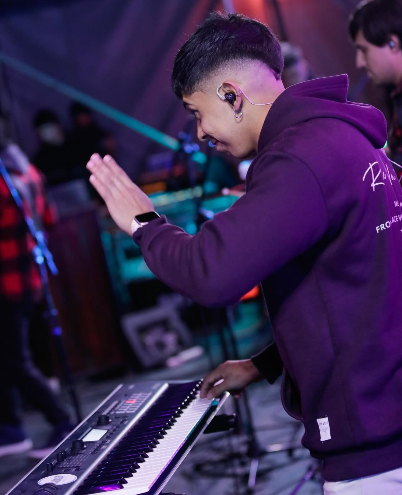
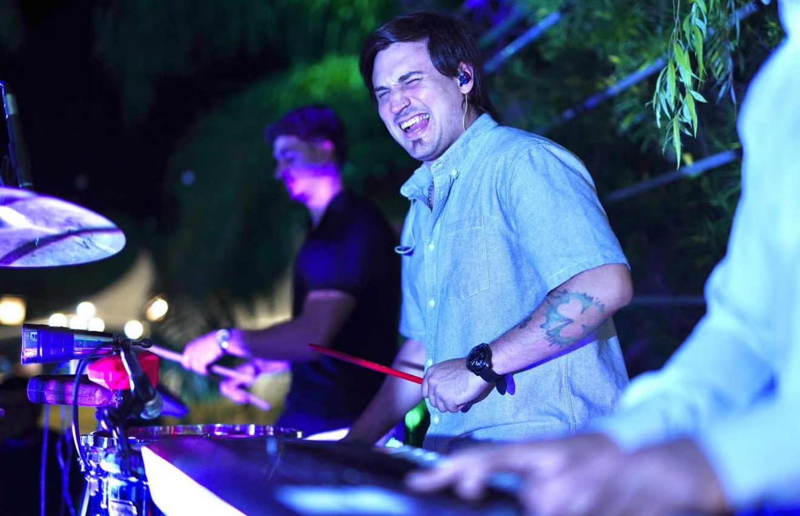

Nico Cusumano Cerasuolo
Nicolas Cusumano Cerasuolo, nacido en Tucuman en 1996. Baterista desde los 4 años de edad, profesor de música apasionado por la música, el rugby y los viajes. Uno de los dos principales causantes que Cuga esté aqui hoy. Se caracteriza por su carisma, buena onda, simpatía y a la vez seriedad para trabajar. Cu...
Franco Gamarra
Franco Gamarra, nacido en Tucuman. Carismatico, cantante desde muy pequeño. Practicamente nació con una guitarra y un microfono bajo el brazo. Apasionado por la música, el rugby y los perros. Se caracteriza por su carisma y sobre todo por el amor que tiene con los animales. Ga...
Fabri Cusumano
Fabri, uno de los motorcitos de la banda, es el encargado de hacer retumbar el BAJO CUMBIERO. Viene de la rama del rock, y hoy en dia es uno de los mejores bajistas de cumbia de la provincia. Se caracteriza por su alegria y su experiencia en el armado y comando de espectaculos, algo que le apasiona.
Marcos Cruz
Marcos o markuza como lo conocen sus amigos, oriundo de Concepcion, la perla del sur de Tucuman es uno de los pioneros de la banda también, su labor importante en Cuga es nada mas y nada menos que hacer sonar su teclado, y con sus punteos, erizar la piel del público.
Mauro Gorosito
Mauro es uno de los integrantes mas jovenes de la banda, y no tan solo por la edad, si no que también es uno de las ultimas incorporaciones a la fila de la percusión. Goro, es un comodín en la percu, ya que por su sabiduría es capaz de poder tocar lo que se necesite en el momento: Timbales y/o Octapad.
Fernando Herrera
Fer o el choro, también una de las ultimas incorporaciones, y también en la fila de la percusión, se caracteriza por su compromiso con el repertorio y sonido musical final. Es un apasionado de la cumbia base, y trae toda su experiencia a la banda.
Rodri Cruz
Rodri Cruz, o Rana, es el encargado de las guitarras de Cuga, apasionado y experimentado musico, y mas en la rama de la cumbia. Es también productor, actualmente productor de Cuga. Por mas que tenga el mismo apellido que Markuza, no son familiares jaja.
Mauro Cusumano
Mauro, el personaje que no se ve en los escenarios, pero siempre está. Es nuestro ayudante, staff y tambien encargado del escenario. Su trabajo es super importante para que todo el show salga de la mejor forma posible.